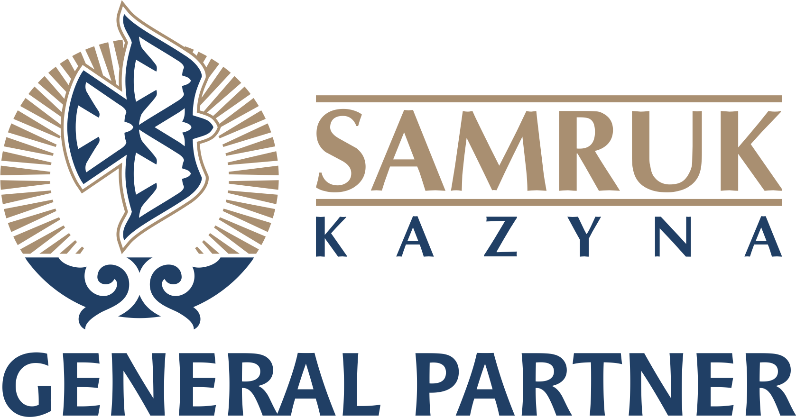

Our Partners

GENERAL PARTNER

PARTNER
GENERAL PARTNER
PARTNER
Among the priority tasks of the federation is not only the achievement of high sports results by the country's deaf judokas in the international arena, but also the education of young people harmoniously developed, physically strong. In achieving the latter, one of the main components is sport.
If we talk about the successes of Kazakh deaf judokas, then the first, truly significant triumph is the gold medal of Yerkebulan Kanafin at the Deaflympics 2022 in Caxias do Sul (Brazil). Aldibek Nurmukhamed, the silver medalist of the Games, continued the medal march at the most important competition - the Deaflympics.
We can be proud of the success of our team at the Asian Championship 2023, held in Bishkek (Kyrgyzstan), where our team won 6 gold medals.
Work on the active development of deaf judo in the country and the conquest of sports peaks continues. We are confident that the formation of the Judo Federation of Deaf Athletes of Kazakhstan will give a new impetus to the development and popularization of judo for deaf and hard of hearing athletes.